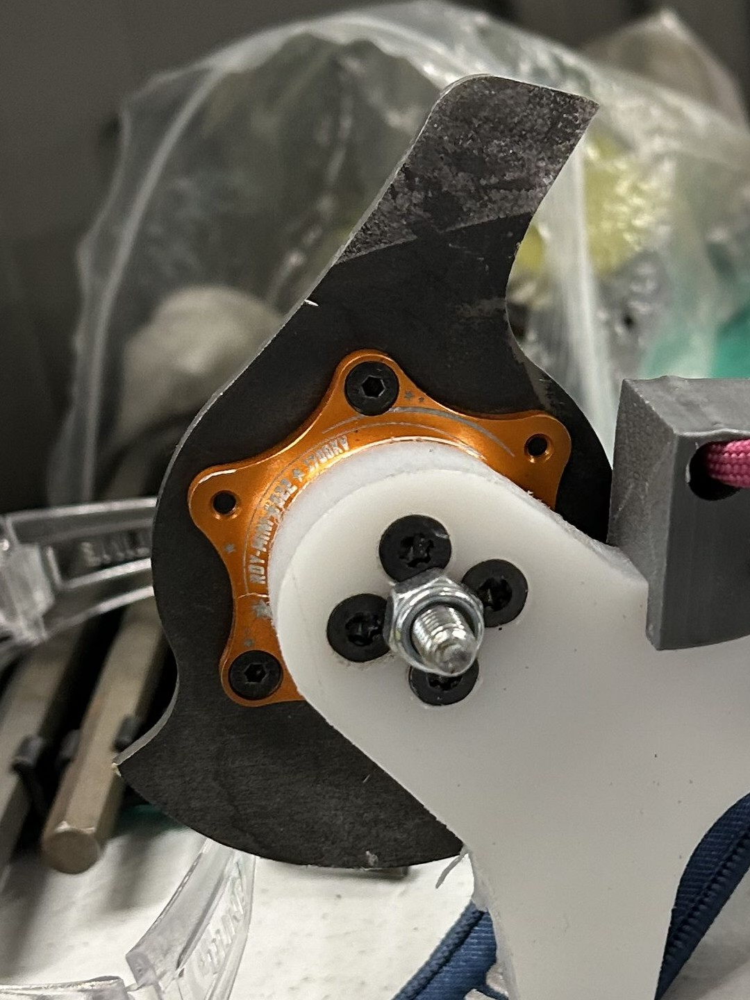
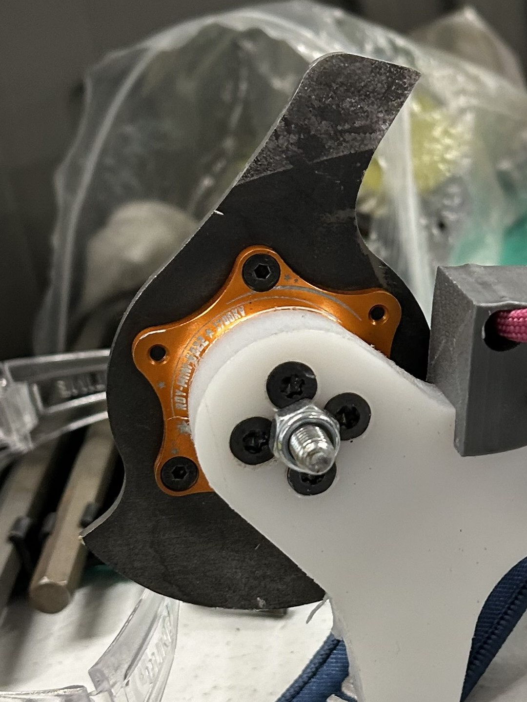

Going into NHRL, I was excited to test out the new version of Chippy and destroy some electronics. My goal for this competition was to run Chippy into the ground and leave with it completely destroyed especially since it probably won’t fight again until 2026 due to scheduling conflicts.
My first match was against Gallos12, a veteran Fingertech beater bar that last competed in 2022. Chippy quickly ran into a couple of problems that would plague me for the rest of the competition:
Despite the problems, I won by judges' decision after disabling Gallos12’s weapon motor and damaging its drive.


Next up was Till Death, a horizontal ring spinner. I ran into the same issues fighting them as well. This time, I was able to take out their weapon motor and receiver before my blade got stuck. Side note: The new blade penetrates deep and took them a good 2 minutes to unstick. I won the fight by knockout because they didn't have a functioning receiver.
After the fight, I realized one of the signal wires had ripped out of my weapon motor. With a quick motor swap, I was ready to go again.
 

My next opponent was Katana, a 4-wheel drive vertical spinner. This was my favorite fight of the day because Katana is just a sick bot, and some of my friends had fought (and lost to) it. I was looking for a little revenge.
The fight started normally. Katana ended up eating its own weapon belt, and I sniped its drive pulley, breaking a drive motor. However, that hit also caused one of my phase wires to come loose, preventing my weapon motor from spinning up to full speed. Strangely, this issue fixed itself during the post-fight functionality test, where the motor worked perfectly again. I ended up winning by judges’ decision.
My final fight of the day was against Big G, another beater bar. Going into this match, I was concerned that my weapon system wouldn’t work at all due to the motor problems from the previous fight. I also forgot to swap out the worn gear on the arm.
During the match, I kept losing engagements with my forks, causing my bot to go flying. I also smoked the weapon motor when the bot was upside down. My controller’s keybindings are too close together, so when I tried to swing the arm to self-right, I accidentally turned the weapon blade on and burned it out. The fight went the full three minutes, and I lost by judges’ decision.
Here are the video links to all the fights:
The mission of running Chippy into the ground was accomplished. I ended NHRL with a 3-1 record, the same as in October. I also ended up going through 2 weapon motors, a weapon ESC, and 5 gears. I wish Chippy went a little farther, but a majority of the bot held up great, and I had an amazing time competing!
The biggest issues revolved around improving the weapon system and making it more reliable. I hope to solve this by:
Aside from the weapon system, other changes I want to make include: